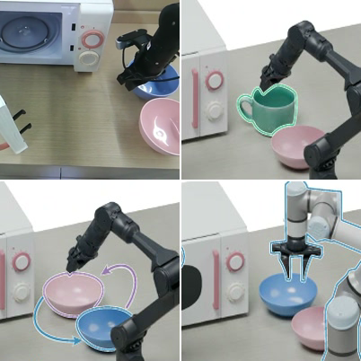
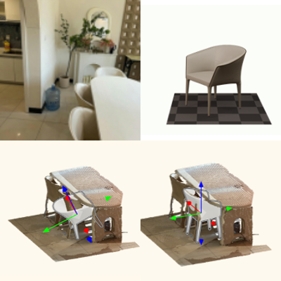
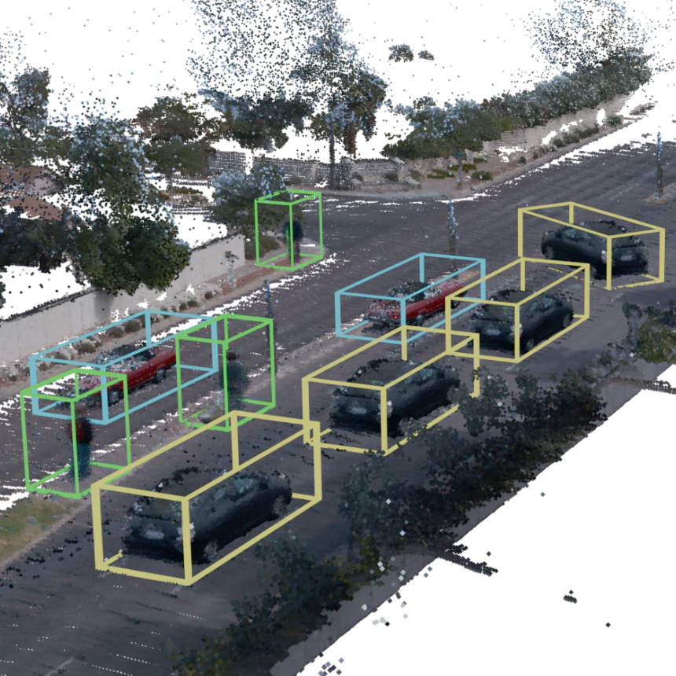

About
I’m a PhD student at the State Key Lab of CAD & CG at Zhejiang University, advised by Xiaowei Zhou and Sida Peng.
My earlier research focused on 3D and 4D vision. I now work on embodied AI, with a particular interest in robotic manipulation.
Publications

ByteDance Technical Report · 2026
Lucida: Parse, Generate, and Place for Composable Real-to-Sim Scene Modeling

IEEE TPAMI · March 2026
Street Gaussians: Modeling Dynamic Urban Scenes With Gaussian Primitives
Experience
- TeleAIResearch Intern · World Model Research DepartmentAdvised by Haibin HuangSep – Nov 2026
- ByteDanceResearch Intern · Seed RoboticsAdvised by Yuang WangAug 2025 – Mar 2026
Education
- Zhejiang UniversityPhD student · State Key Lab of CAD & CG2026 – Present
- Zhejiang UniversityBachelor’s degree in Computer Science and Technology2022 – 2026
Chu Kochen Honors College
Honors & Awards
- Top Ten Honors Students
3rd selection, Chu Kochen Honors College, Zhejiang University - National Scholarship for Undergraduates2024–2025
- Zhejiang Provincial Government Scholarship2023–2024
- National Scholarship for Undergraduates2022–2023